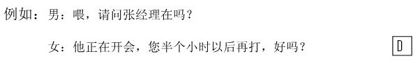
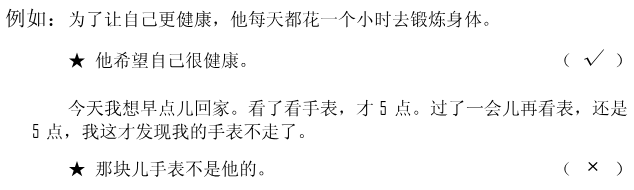
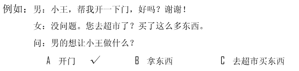
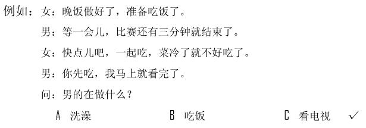
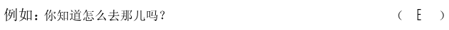
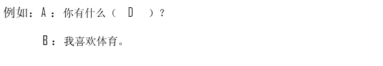
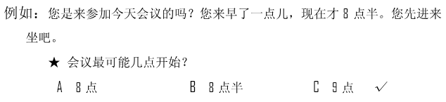
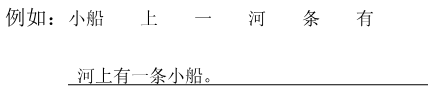

🎧 Phần nghe · Câu 1–40
Bấm phát để bắt đầu nghe. Thời gian làm bài bắt đầu khi bạn nghe hoặc chọn đáp án.
Nghe · Phần 1 · Câu 1–5
Nghe và chọn hình A–F phù hợp.

Nghe · Phần 1 · Câu 6–10
Nghe và chọn hình A–E phù hợp.
Nghe · Phần 2 · Câu 11–20
Nghe và chọn ✓ (đúng) hoặc × (sai).

Câu 11
★空调的声音太大。
Câu 12
★今天天气很冷。
Câu 13
★王经理是北方人。
Câu 14
★运动会还没举行。
Câu 15
★爸爸去上班了。
Câu 16
★他在眼镜店里。
Câu 17
★关心朋友的办法很多。
Câu 18
★她越来越漂亮了。
Câu 19
★校长的猫喜欢在椅子上睡觉。
Câu 20
★他是老师。
Nghe · Phần 3 · Câu 21–30
Nghe và chọn đáp án A, B hoặc C.

Câu 21
Câu 22
Câu 23
Câu 24
Câu 25
Câu 26
Câu 27
Câu 28
Câu 29
Câu 30
Nghe · Phần 4 · Câu 31–40
Nghe hội thoại và chọn đáp án A, B hoặc C.

Câu 31
Câu 32
Câu 33
Câu 34
Câu 35
Câu 36
Câu 37
Câu 38
Câu 39
Câu 40
Đọc · Phần 1 · Câu 41–45
Chọn câu A–F phù hợp để ghép với từng câu.

Đọc · Phần 1 · Câu 46–50
Chọn câu A–E phù hợp để ghép với từng câu.
Đọc · Phần 2 · Câu 51–55
Chọn từ A–F điền vào chỗ trống.
Đọc · Phần 2 · Câu 56–60
Chọn từ A–F điền vào chỗ trống của hội thoại.

Đọc · Phần 3 · Câu 61–70
Đọc đoạn văn và chọn đáp án đúng.

Câu 61
站得高，才能看得远。所以，人们对自己的要求高一些，了解的事情就会更多一些。
★想要了解更多，我们需要：
★想要了解更多，我们需要：
Câu 62
熊猫的耳朵、眼睛、鼻子是黑色的，脚也是黑色的，它身上除了白色就是黑色。所以人们说：熊猫的照片只能是黑白的。
★根据这段话，熊猫：
★根据这段话，熊猫：
Câu 63
老师问小明：“北京和月亮，哪个离你更近？”“当然是月亮了。”小明说。老师问他为什么，他说：“因为我经常可以看到月亮，但要看到北京，我需要花很长时间。”
★小明为什么认为月亮离他近？
★小明为什么认为月亮离他近？
Câu 64
他刚才给我打电话，说那本书里还有一个问题，一会儿你去他那儿看看。以后要注意，一定要认真。
★那本书：
★那本书：
Câu 65
小黄，明天上午我有个会，你帮我去机场接李先生吧。他明天8点的飞机，你早点儿去，早半个小时到，好不好？谢谢你了。
★小黄明天最可能：
★小黄明天最可能：
Câu 66
因为工作需要，我要用到汉语。为了使自己的汉语说得更好，我参加了一个汉语学习班。除了星期天，每天晚上都有课。
★我星期几没有课？
★我星期几没有课？
Câu 67
爸爸希望爷爷和奶奶搬到城里跟我们一起住，但是他们不同意。爷爷说，他们不习惯住楼房，而且不愿意离开那些老邻居。
★爷爷奶奶不同意什么？
★爷爷奶奶不同意什么？
Câu 68
我妻子是出租车司机，她开车十几年了，北京每一条街道的名字她几乎都知道。她很热情，工作很努力。
★我妻子是个什么样的人？
★我妻子是个什么样的人？
Câu 69
中国人常说：“好马不吃回头草。”意思是说，已经过去的就不要再想了，要向前看，别走回头路。
★这句话主要想告诉我们：
★这句话主要想告诉我们：
Câu 70
哥哥长得很高，只有一个爱好，就是打篮球。他希望有机会做篮球运动员，但是他现在的水平还不是很高。
★根据这段话，哥哥：
★根据这段话，哥哥：
Viết · Phần 1 · Câu 71–75
Sắp xếp các từ đã cho thành câu hoàn chỉnh.
Phần viết được đối chiếu với đáp án mẫu; bỏ qua khoảng trắng và dấu câu. Điểm hiển thị là điểm luyện tập.

Câu 71
Câu 72
Câu 73
Câu 74
Câu 75
Viết · Phần 2 · Câu 76–80
Nhập chữ Hán phù hợp với pinyin vào từng ô trống.